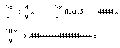
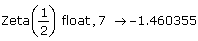

Symbolic Floating-Point Evaluation |
To evaluate an expression using symbolic floating-point evaluation, select the expression and either:
- or -
π float→ 3.1415926535897932385
By default "float" evaluates the result to 20 digits.
To specify the number of digits that Mathcad computes for the result, add a comma after "float," followed by a positive integer specifying the number of digits. For example, the following evaluates π to 25 digits:
π float, 25→ 3.141592653589793238462643
Note: Reducing the number of computed digits reduces the accuracy of the result. You should not use this feature as a way of reducing the size of the displayed result. Instead, you can reduce the number of displayed digits, without affecting the accuracy of the result, as follows:
"Number of decimal places" only affects how results are displayed, not their actual values.
You can also force symbolic floating point evaluation with just the symbolic equal sign by using decimal numbers rather than integers.

If you need to evaluate a symbolic expression numerically, you can usually do so using the numerical equal sign. However, some symbolic functions cannot be evaluated with the numerical equal sign. To evaluate these, use the symbolic equal sign with the keyword "float," which performs symbolic floating-point evaluation.
For example, you can evaluate the symbolic function Zeta, which calculates the Riemann Zeta function, to 7 digits as follows:

Another method is to select the expression and click Evaluate > Floating Point on the Symbolics menu. Then enter the number of decimal places for the result in the Floating Point Evaluation dialog. In this case the result will not automatically update if you make changes elsewhere in the worksheet.